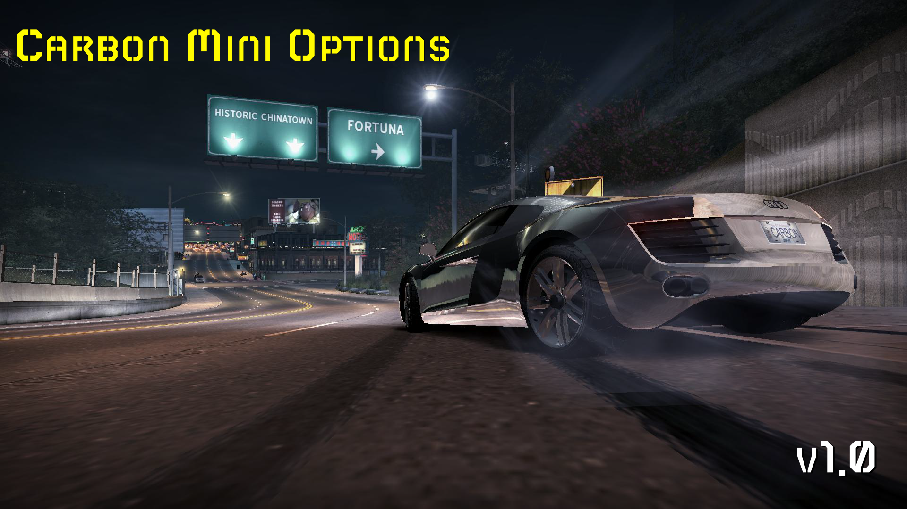
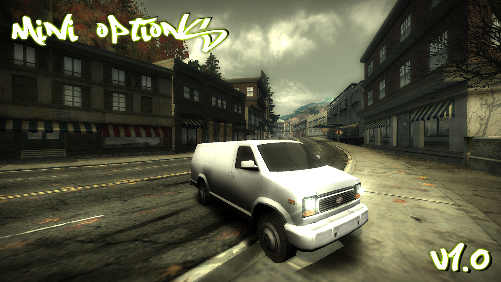

Welcome to my NFS Modding Place
Here you can download/see all my mods for different games
Above you have some buttons that will display the mods I made for the respective game
(C) Copyrights
You are not allowed to republish my mods on another site without my permission.
You are not allowed to use the code of this website for your website, make your website in your style
Contact Me
Discord: Gabriel45#6859
Instagram Profile
Need For Speed Carbon (2006)
Below you can download or look at all my NFS:C mods

[NFS:C] MiniOptions v1.0
This mod is like ExtraOptions but a Lite version of it
Installation:
1. Make sure you have the Ultimate ASI Loader installed
2. Copy the .asi and .ini files in your scripts folder, if you don't have the scripts folder make it
3. Enjoy
NOTE: This script might not work properly if you have ExtraOptions installed
Download
Need For Speed Most Wanted (2005)
Below you can download or look at all my NFS:MW mods

[NFS:MW] MiniOptions v1.0
This mod is like ExtraOptions but a Lite version of it
Installation:
1. Make sure you have installed dinput8.dll and place it in your game directory
2. Copy .asi file in your scripts folder, if you don't have the scripts folder make it
3. Enjoy
Description:
What will this mod do?
- Skipping DDay Races & Career Intro
- Starting Cash will be 999.999.99$
- Everything is unlocked
- All cars are available in car lot (Police, Traffic, Bonus + Normal cars)
- Instant challenge rivals
- You can enable/disable rain from NUMPAD_1 key
NOTE: This script might not work properly if you have ExtraOptions installed
Download